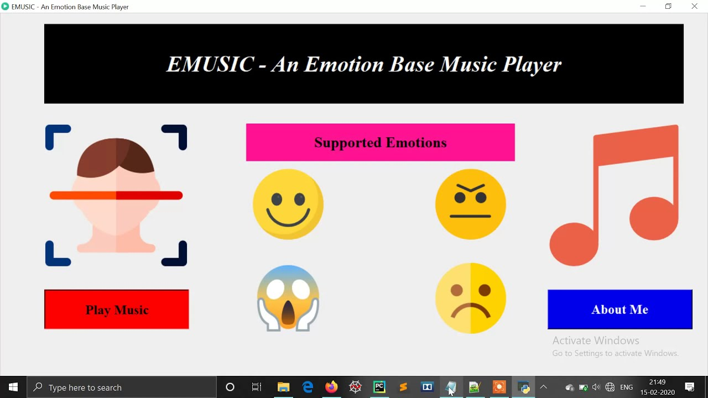

The Emotion-Based Music Player is an innovative application that uses facial emotion recognition to automatically play songs that match the user's mood. It aims to enhance the music experience by making it more personalized and emotionally aware..
Approach
We used OpenCV and a pre-trained emotion detection model to identify the user’s facial expressions in real-time. Based on the detected emotion, the system dynamically selects and plays a song from a categorized playlist. A user-friendly interface was developed for seamless interaction and music control..
Results
The music player achieved over 90% emotion detection accuracy in controlled environments and significantly improved user engagement. Users reported a more immersive and mood-lifting music experience through the intelligent selection of tracks based on their emotions..